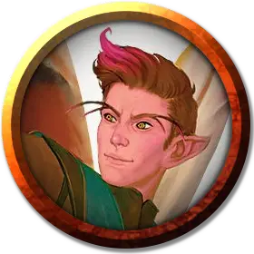

Подручный Сумеречного света (Маленький)
Witchlight Hand (Small)
Средний Гуманоид, любое мировоззрение

Класс Доспеха 12
Хиты 9 (2к8)
Скорость 30 футов
| мод | спас | ||
|---|---|---|---|
| СИЛ | 10 | +0 | +0 |
| ЛОВ | 14 | +2 | +2 |
| ТЕЛ | 11 | +0 | +0 |
| мод | спас | ||
|---|---|---|---|
| ИНТ | 12 | +1 | +1 |
| МДР | 13 | +1 | +1 |
| ХАР | 12 | +1 | +1 |
Навыки Ловкость рук +6
Чувства пассивное Восприятие 11
Языки Общий
Опасность 1/8 (25 опыта)
Бонус мастерства +2
Особенности
Языки. Знает Общий и ещё один язык.
Тайное владение. Подручный дополнительно владеет одним из следующих навыков: Акробатика +6,Атлетика +4, Выступление +5, Магия +5, Медицина +5 или Уход за животными +5.
Действия
Кинжал. . Рукопашная или дальнобойная атака оружием: +4 к попаданию, досягаемость 5 фт. или дистанция 20/60 фт., одна цель. Попадание: 4 (1к4+2) колющего урона.
Пыльца пикси (1/день). Подручный рассыпает щепотку пыльцы пикси на себя или другое существо, которое он видит в пределах 5 футов от себя. Обсыпанный получает скорость полёта 30 футов на 1 минуту. Если существо находится в воздухе, когда этот эффект заканчивается, оно благополучно опускается на землю, не получая урона и приземляясь на ноги.
Использование заклинаний. Подручный накладывает одно из следующих заклинаний. В качестве базовой характеристики он использует Харизму.
• Неограниченно: пляшущие огоньки [dancing lights], сообщение [message], фокусы [prestidigitation].
Описание
Подручные Сумеречного Света - это основа карнавала Сумеречного Света, пестрое собрание людей, которые стоят за прилавками, делают ремонт, кормят и занимаются с животными, следят за ворами и другими злоумышленниками, а также выполняют другие разнообразные задания по велению господина Сумрака. Некоторые из них также работают неполный рабочий день в качестве артистов и зазывал. Хотя они путешествуют во многие миры Материального Плана, подручные Сумеречного Света редко покидают территорию карнавала. Карнавал - это единственный мир, который они знают и о котором заботятся. Всего на карнавале занято 124 подручных Сумеречного Света.
Когда работники присоединяются к Карнавалу, все они заключают соглашение: они никогда не должны причинять вред другому работнику и не могут покидать карнавал более чем на один день. (Более длительное отсутствие приравнивается к увольнению, по мнению господина Сумрака). Работники на смене обязаны носить фальшивые крылья бабочки, пристегнутые к спине. Господин Сумрак и господин Свет также снабжают их небольшим количеством пыльцы пикси [pixie dust].
Подручным платят лишь небольшую часть прибыли карнавала, но этого достаточно, чтобы их кормили, одевали и заботились о них. Некоторые из работников берут больше часов или выполняют дополнительную работу, чтобы расплатиться с долгами и кредитами.
Большинство подручных Сумеречного Света обучены мелким магическим трюкам, которые они используют, чтобы развлечься самим и развлечь посетителей. (Персонажи с предысторией подручного Сумеречного Света не изучают магию в рамках этой предыстории, но они могут учесть это, выбрав класс заклинателя.)